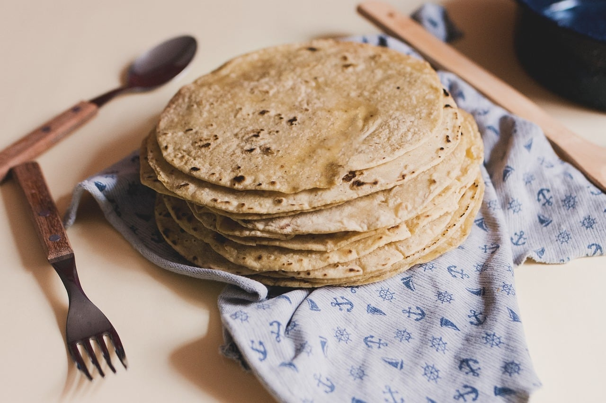

Hand-Made Tortillas
Our tortillas are the best in town! We make a fresh batch of them every morning with the best ingredients sourced directly from Mexico. We serve corn tortillas primarily but, make a portion on wheat tortillas for those who prefer them.